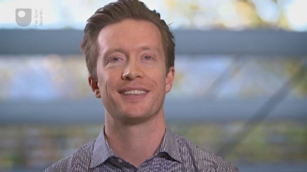

4 Establishing an effective language learning routine¶
We noted earlier on in the course that language-learning ‘know-how’ is only part of the battle. A small part, in fact. Knowing and doing are not the same thing and in my experience working with thousands of language learners around the world, there is one factor above all else that determines success in learning a language: the ability to learn consistently over time.
Activity 4 Reflecting on past achievements¶
Timing: Allow about 15 minutes
Question¶
Think about a time in your life when you achieved something impressive. For example, finishing a big project at work, gaining a diploma or a degree or passing an important exam. How did you arrange your routine to make that happen? Do you learn your new language with the same attitude or determination?
The aim of this section is very simple: to impress on you the importance of working at your new language every day and to keep it up over time.
This much is straightforward and the importance of this does not need much explaining. The reality, however, is that our lives are complex, busy and our priorities change over time. It is a rare case that someone can work at their language for months (or years) on end without interruption, breaks or otherwise.
When we talk about routine in language learning, then, we need to anticipate such disruptions.
Here’s a typical scenario:
John starts learning French.
He is excited and devises a grand plan for how he will learn.
He is determined to work hard at it and become fluent in French.
His plan gets off to a good start, but becomes unsustainable amid a busy work and family life.
John ‘falls off the horse’ and stops studying for a couple of weeks.
The prospect of returning to his overly-ambitious study plan is scary for John.
Instead, he waits until ‘things calm down at work’.
Months pass and John has done little or no study.
Progress in a foreign language does not come from fits and starts. It comes from systematically working at it over time. Therefore, understanding how you can learn a language in a sustainable way and avoid the crash and burn scenario described above, is, I have come to understand, the single biggest consideration for independent language learners.
I will now take you through a series of exercises that will help you determine how you will most likely be successful in your language learning. The main aim is to discover how language learning can fit around your lifestyle, *not *how we can bend your lifestyle to create time for language learning.
Because the secret to success is consistency and sustainability, the more realistic you can be about your available time, the more likely you will be able to keep it up over the long-term.
Activity 5 Creating a study schedule¶
Timing: Allow about an hour
Question¶
Take a blank piece of paper and divide it into seven columns – one for each day of the week. Considering your family, work, and other commitments, mark on the paper all parts of the week where you could potentially create uninterrupted time for language study. (Don’t forget to sleep!)
For example:
Weekdays: 7–8 am.
Tuesdays and Thursdays: 8.30–10 pm.
Weekends: 9–10 am., 3–5 pm.
Next, think about your dead time. This is time where you can’t usefully do anything that requires focus. For example: commuting, walking to work, shopping, waiting for your children while they are at cubs, gym club or ballet class. Make a note on the paper of all dead time that occurs on a regular basis during your week.
Once you have identified all the points in your week where you have a good opportunity to learn, the next step is to put together a study schedule.
Here is how I suggest you decide on a routine:
Identify a daily time for focused language study (30–60 minutes). During this period, you need to bring your full attention to the task of studying. Therefore, you need a quiet space where you can concentrate. This should be something you aim to do daily, although you can take the weekend off.
Decide which points in your day are ‘dead time’ (15–30 minutes). Devote a least one daily period of ‘dead time’ to spend with your target language, such as your morning commute. Treat this time as an opportunity for exposure to the language, rather than focused study. You might listen to podcasts, or review the dialogues from your textbook, for example.
__Schedule opportunities to speak (30–60 minutes). __Unless you live in a foreign language environment, you probably do not get many opportunities to speak your target language. Therefore, you should schedule this into your week to ensure it happens. Whether you take lessons online, or have coffee with a language partner, it is helpful to have at least 2–3 speaking sessions per week in order to make progress.
Activity 6 Comparing Olly’s study routine to yours¶
Timing: Allow about 30 minutes
Question¶
Watch this video which outlines my study routine in detail. Compare this routine to yours. Can you see any opportunities to improve your plan? Is there anything you hadn’t considered?
OLLY RICHARDS: In this video, what I’m going to do is walk you through my own personal language-learning routines so that you can see what I do to learn languages. Not because I want you to copy what I do. In fact, I’m going to specifically ask you not to copy what I do. But so that we can look at the different elements that make up the routine, because within there somewhere are going to be, hopefully, some opportunities or inspiration that you can take to improve or refine your own language-learning routine.; So what I like to do is wake up early in the morning. It doesn’t matter what time. But I tend to wake up early before the rest of the world is awake so that I can spend 45 minutes to an hour working on my languages. Now, this is what I call my core study time. This is quite focused study. I’m not watching TV or listening whilst I’m in the kitchen or anything like that. I’m sat down at my desk actually studying.; Next, when I leave the house, I usually have a 20- to 30-minute commute. Sometimes I take the train. Sometimes I walk. And I use that time to listen to audio in the language that I’m learning.; Now, often at lunchtime, when I take a break, what I will do is have a language lesson over Skype. So in my case, I’m learning Cantonese right now. I’ll take a lesson with my teacher in Hong Kong for about 30 minutes to 45 minutes. So I’ll be speaking the language during that time.; Now, in the afternoon or in the evening I’ll be going back home. So I’ll have a bit more time there to do my listening. And then in the evening, I like to do two things. First of all, I like to spend a little bit of time, even if it’s just 10, 15 minutes, to review the stuff that I’ve done throughout the day– not study anything new, but just review it.; And then lastly, in the evening, what I try to do– I don’t always do it. But much of the time, rather than watching TV or listening to podcasts, or whatever it may be, in English, I’ll actually do that activity in the language that I’m learning. So I’m getting a bit of exposure there.; OK, so that’s the routine. Let me just walk through it one more time quickly. So in the morning– first thing in the morning– I’m studying in an intensive way for about 45 minutes to an hour. I then listen to audio in my breaks during the day, when I’m commuting or walking. At lunch time, two or three times a week, I’ll have a 30- to 45-minute Skype lesson. In the evening, I’ll do a quick review of what I’ve done during that day. And then later on, I’ll watch TV or something like that in the language that I’m learning.; Now, what I’d like to do now is go through each of those to tell you the reason behind what I do and why it’s effective. Remember, you should not be listening to this thinking, I have to do everything in the same order. You could flip the day on its head and that’s absolutely fine. What we’re interested in here is, what are the different elements to this day? Because they’re what I’ve found most effective, and also what I’ve observed in other friends of mine who learn languages very well, what I’ve observed that they do and that is effective.; So the reason that I study first thing in the morning– for about 45 minutes to an hour– is because I find that if nothing else happens for the rest of the day, that’s the only thing that I do, then the day is already a success. There are all kinds of things we can do when we’re learning a language. We can watch TV, listen to podcasts, go on YouTube. But really, if you want to make progress, you have to have some time that is focused. You’ve got to have some time when you’re pushing yourself, when you’re studying at the best of your ability without being distracted.; And so for me, you need to find this daily time. It doesn’t have to be every day– four or five days a week at least. But this daily time, where you can really give your best to the language and spend 45 minutes to an hour really focusing on whatever that may be for you– whether it’s going through your textbook, memorising grammar or vocabulary– whatever that means for you, you’ve got that dedicated time. So I do that early in the morning because I like to get it out of the way. I don’t get distracted. And the day is already won by that point.; Now, almost everybody has this dead time, as it’s called, during their commute, whether you walk to work or cycle. And this is a brilliant time to exploit for language learning. Now, I usually do audio in that time, because often I’m walking. But you might be on the train. In which case, you might like to– I don’t know, read a book, or watch videos, or something like that. The point is that you’re not just staring out the window and just daydreaming. You’re actually using that dead time to spend with the language that you’re learning. And this increases the amount of exposure you’ve got to the language overall.; Now, many people actually try to study on their commute. I don’t generally recommend this, because you can be very distracted. And you can probably, in most cases, not focus in-depth enough to get a lot out of it. So I like to use that commuting time to just get more exposure to the language.; Now, at lunchtime I have a short lesson. Again, you don’t have to do this at lunchtime. But what I find is that when I’m learning a language, I need to have at least two or three sessions a week when I’m speaking to a native speaker or a teacher. I like to do it on Skype, because it’s just really convenient. I can schedule a time with my teacher in Hong Kong, who’s eight hours ahead of me. And it fits perfectly into my schedule. You can do it after work or at the weekend. But I like to aim for at least two to three sessions a week, because that regularity and frequency of speaking is what helps me improve my speaking skills.; Now, at the end of the day– I mentioned this review time. Now, why is this important? It’s important because if every day all you’re doing is studying new information, but you’re not going back to review things that you’ve already learned, you’re missing a huge opportunity. You might learn new things by studying new things. But the way that you really consolidate and remember that information is by actually reviewing it and going back to look at it a second time. So what I find is that just by taking 10, 15 minutes at the end of the day to look back over what I’ve studied, that really helps to strengthen the information, consolidate it in my mind. And I’m much more likely to remember it afterwards.; Now, at the end of the day– this is what I actually call downtime. So this is time where I am not really doing anything. I’m too tired to study. But you can actually still use this for language learning. And so what I recommend you do in this time is things that you actually enjoy. If you like reading books in your mother tongue, well, try reading books in the language that you’re learning. If you like watching TV do that, but do it in the language that you’re learning.; Again, by taking advantage of your dead time and your downtime throughout the day, what you’re doing is not only building a relationship– a positive relationship with the language by consuming interesting material, but you’re just increasing the overall exposure. And by doing this, you can easily add an extra hour per day of time just spent listening to and enjoying the language. And over time, that is what really adds up. Over the course of a month or a year, you can spend hundreds of extra hours with the language.; So this is my routine. Again, I don’t want you to go out there and copy it. But I’d like you to just think through the different elements to it. Think about what parts of what I talk about you maybe are not doing in your own routine. And maybe you could take one or two parts of that, experiment with it, and see whether that helps you in your learning.; |

Earlier, I emphasised the importance of creating a study routine that is realistic, so you can keep it up over the long-term. With that said, once you have identified a learning routine that you will follow, it is important that you commit to it. This means scheduling study time throughout your week. I like to go as far as writing it in my calendar each week, so that I have an appointment with myself.
Of course, not everyone will be able to – or want to start learning at 5 am. This routine suits me, because I am an early riser, and 5 am is a quiet time before my daughter wakes up. What I want you to take away from my experience is that the responsibility for turning up and studying your language each week will ultimately rest with you. Providing you have made realistic choices, though, you will have created a good routine that will fits nicely around your lifestyle, and will lead to success in your language learning.
Laura says:¶
As a shift-worker who is frequently on call and whose schedule can get rather disrupted by emergencies at work, I have never been able to have the sort of structured routine Olly recommends. I have to be more flexible in my approach, but I still make a point of studying regularly. For instance, I am not always able to study at the time of day when I am most ‘fresh’ or alert, because that is when I have to be at work, so I sometimes have to study in the evening rather than the morning. I usually do my best work at the weekend, so that is when I aim to work on the most difficult parts (for me) and therefore I allow myself to work on the easier parts when the only time I have free in the week is in the evenings.
Activity 7 Schedule your study plan into your diary or calendar¶
Timing: Allow about 10 minutes
Question¶
Grab your diary, and write in your new language study schedule for the next week. The point here is not to be perfect – your schedule will undoubtedly change over time. However, by making an informed plan for learning, and committing to it, you vastly increase your chances of following through.